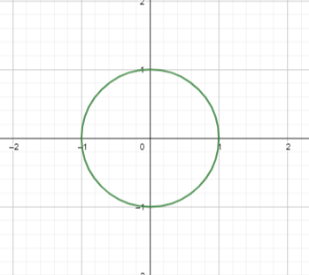

¿Qué es un Círculo?
Un círculo es simplemente el conjunto de todos los puntos que están a la misma distancia
de un punto central determinado.
Si colocamos el centro en (0,0), el círculo unitario (con radio 1) es el conjunto de todos los puntos
a una distancia de 1 del origen. Medimos la distancia desde el origen hasta
\( (x,y) \) como \( \sqrt{x^2 + y^2} \), por lo que el círculo unitario sería el
conjunto de todas las coordenadas \( (x,y) \) que satisfacen la ecuación:
\( 1 = \sqrt{x^2 + y^2} \)
La solución a estas ecuaciones nos da la forma bien conocida de un círculo:

Círculo Unitario
Lo interesante es que podemos generalizar esta idea.
Parece que no hay forma de generalizarla, ¿qué otros tipos de círculo podríamos pensar?
Vemos que en realidad hicimos una suposición al construir el círculo,
nuestra definición de distancia. Definimos la distancia desde el origen
hasta \( (x,y) \) (que llamaremos norma) como:
$$||(x,y)|| = \sqrt{x^2 + y^2}$$
La norma se define de esta manera porque así es como funcionan las distancias en el mundo real (y es fácil de verlo usando el teorema de Pitágoras).
Sin embargo, en matemáticas somos libres de definir normas que no tengan nada que ver con el mundo real
y ver a qué nos llevan estas definiciones.
Sin embargo, no podemos definir una norma como queramos, debe haber algunas
restricciones para que una función sea interpretada como una norma, estas son:
- La norma debe ser una función que tome un punto \( (x,y) \) y dé un número real
no negativo \( ||(x,y)|| \)
Es decir, las normas no pueden ser negativas, tal como esperaríamos de una distancia.
- Definida positiva: Para todo \( (x,y) \), si \( ||(x,y)|| = 0 \) entonces \( (x,y) = (0,0) \)
Es decir, solo el origen tiene una norma de 0, todos los demás puntos tienen normas positivas
- Homogeneidad: \( ||a(x,y)|| = |a| \cdot ||(x,y)|| \)
Es decir, si escalamos el vector por una constante \(a\), entonces la norma
debería ser mayor en \( |a| \)
- Desigualdad triangular \( ||(x,y) + (w,z)|| \leq ||(x,y)|| + ||(w,z)|| \)
Es decir, si queremos ir desde el origen hasta \( (x+w,y+z) \), es más rápido
(o igualmente rápido) ir directamente que ir a \( (x,y) \) y luego a \( (x,y) + (w,z) \).
Estas son algunas condiciones bastante restrictivas, sin embargo,
podemos encontrar toda una familia de normas que cumplen con estas condiciones.
Métrica LP
Definimos un nuevo tipo de norma como:
\( ||(x,y)||_p = (|x|^p + |y|^p)^{1/p} \)
Donde \( p \) es un número con \( p \geq 1 \). Vemos que para \( p=2 \) recuperamos la antigua
métrica euclidiana, pero para otros valores de \( p \) tenemos otras normas interesantes.
No todas las normas tienen esta forma particular, pero solo estudiaremos estas.
Para realmente llamar esto una norma, deberíamos demostrar que satisface los requisitos
que mencionamos. Los primeros requisitos son fáciles de ver, pero el último requiere un
poco más de trabajo y se llama la desigualdad de Minkowski.
Círculos en la norma LP
Usando esta definición de norma, podemos definir círculos en diferentes normas.
Un círculo unitario en la norma LP sería el conjunto de todos los puntos con \( ||(x,y)||_p = 1 \)
Es decir, todos los puntos con:
\( (|x|^p + |y|^p)^{1/p} = 1 \)
\( \Rightarrow \;\; |x|^p + |y|^p = 1 \)
Esta es una generalización de la definición de círculo. Para \( p=2 \) obtenemos
el círculo euclidiano, mientras que para cualquier otro valor de \( p \geq 1 \), obtenemos
círculos en diferentes normas y toman formas diferentes.
En el siguiente programa interactivo, puedes ver cómo se verían los círculos unitarios
en diferentes normas. Puedes controlar el valor de \( p \) y ver el conjunto de
soluciones de \( |x|^p + |y|^p = 1 \) (es decir, el círculo en la norma \( p \)).
Podemos ver que los 'círculos' toman formas curiosas para diferentes valores de \( p \).
Casos Especiales
Para valores especiales de \( p \), obtenemos dibujos interesantes:
- \( p=2 \):
Para este valor, recuperamos la métrica euclidiana original y el dibujo es un círculo regular
- \( p=1 \)
Para este valor, la ecuación de la métrica es \( ||(x,y) || = |x| + |y| \).
Es decir, la distancia a \( ||(x,y)|| \) se encuentra sumando la distancia a lo largo del eje x y
la distancia a lo largo del eje y. Intuitivamente, en esta norma, 'no podemos' movernos en diagonal,
solo podemos movernos paralelo a los ejes.
Esto se llama la norma de Manhattan, porque esta sería la distancia para moverse por
una ciudad como Manhattan. Si queremos ir desde un cierto punto en Manhattan a un punto 3 calles al
este y 2 calles al norte, no podemos movernos en diagonal, solo podemos movernos en las direcciones
determinadas por los bloques de la ciudad.
Por lo tanto, la distancia entre estos dos puntos sería de 5 = 2+3.
La métrica para \( p=1 \) encapsula esto.
- \( p = \infty \)
Aunque esta norma no está incluida en el programa, podemos considerarla como el límite
cuando \( p \) se hace muy grande. Por lo tanto, si \( p \) es muy grande,
tenemos que \( ||(x,y)||_{\infty} = \lim_{p \rightarrow \infty} (|x|^p + |y|^p)^{1/p} = \max (|x|, |y|) \)
Así que la distancia a un punto es igual al máximo de sus coordenadas.